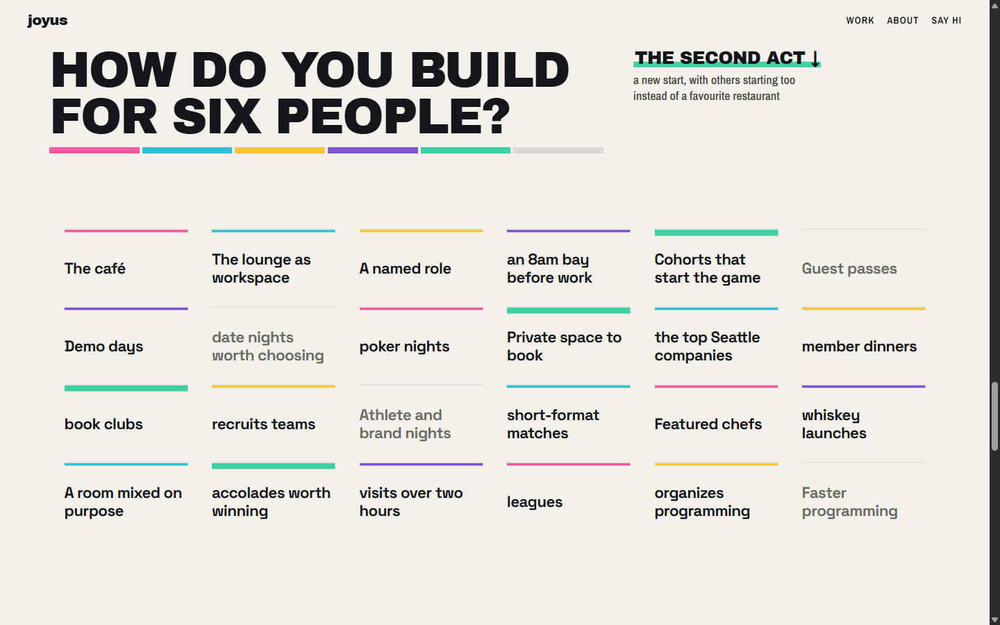
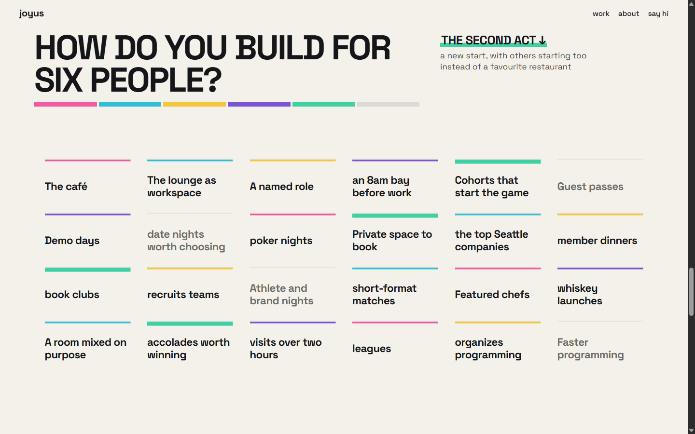
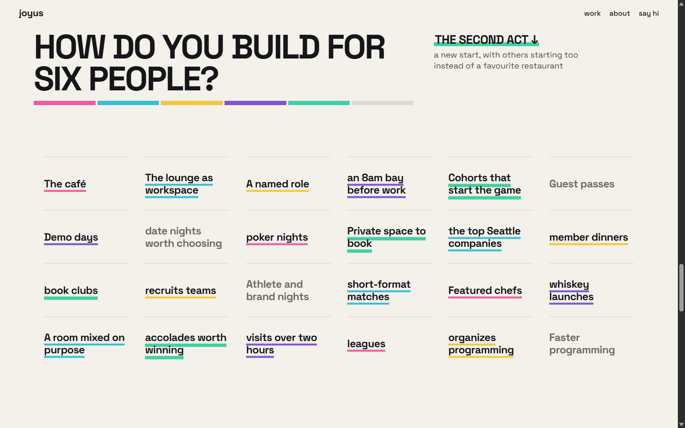

EWC, both: seafoam, one typeface, underlines
One at a time open
1 Seafoam for orange



| Hue | Nearest of the other five | Dark text on it | |
|---|---|---|---|
| orange #ff8a3d | 24, inside pink 331 to yellow 45 | yellow, 39 | 7.5:1 |
| seafoam #3fd0a4 | 162, the gap between yellow 45 and cyan 189 | cyan, 39 | 9.0:1 |
| #5fd6b5 | 163 | cyan, 32 | 9.8:1 |
| #2bbf96 | 163 | cyan, 38 | 7.5:1 |
| #7fe0c4 | 163 | cyan, 30 | 11.1:1 |
2 One typeface


3 Underlines open

